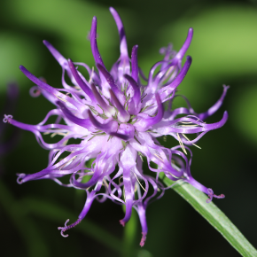
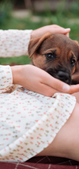
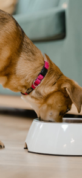

Lab-V Arthrohard Preparat na wsparcie stawów dla psa i kota
Arthrohard to dobrze przyswajalny suplement diety w formie syropu,
stworzony z myślą o zdrowiu stawów Twojego psa lub kota.
Co wyróznia nasz preparat
Innowacyjny dodatek - Czarciego Pazura
Zapewnia dodatkowe wsparcie w zwalczaniu stanów bólowych i
zapalnych. Skoncentrowane składniki aktywne, opracowane we
współpracy z lekarzami weterynarii, przynoszą szybkie i
zauważalne efekty, szczególnie korzystne dla zwierząt z
poważnymi problemami stawowymi.

Wygoda - dwa sposoby podawania
1
Bezpośrednio do pyszczka
2
Zmieszany z karmą


Skuteczność - skoncentrowana dawka
Tylko jedna porcja dziennie.
To nie tylko wygoda, ale również gwarancja, że Twoje zwierzę
otrzymuje wszystko, czego potrzebuje, aby cieszyć się zdrowiem
i aktywnością na długo. Skorzystaj z zalet Arthrohard i zobacz
różnicę w komforcie życia swojego zwierzęcia.